14 minutes
Installing linux on a q8 Allwinner A13 tablet
In this post, I will try to install linux on a q8 (Allwinner A13 based) tablet. Multiple people have already succeeded in running debian/arch on the tablet, so it must be possible.
The q8 tablet
The q8 tablet is a cheap chinese android tablet that runs Android 4.1.
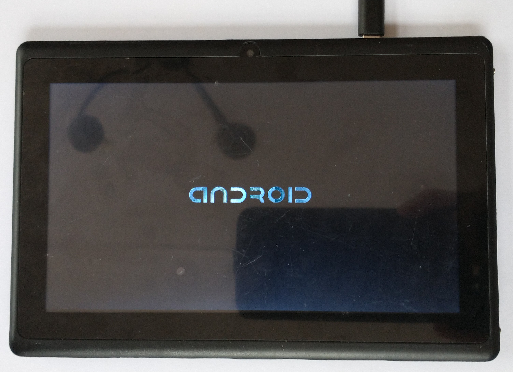
Looking at a page on linux-sunxi.org, I believe I have the q88 variant of the tablet. I’m not sure about this though. This blogpost will use the terms q8 and q88 interchangeably.
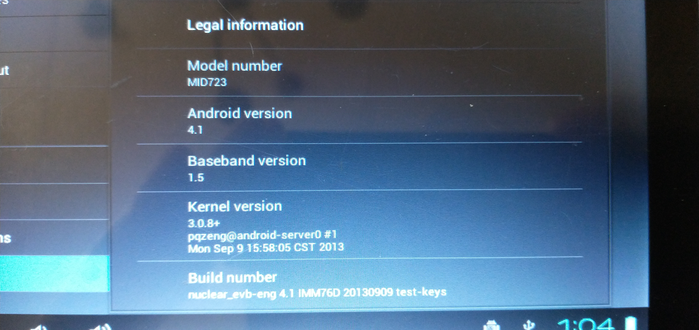
There are tablets that look similar, but have a different Allwinner SoC. The one I have, happens to have an Allwinner A13 SoC inside it:
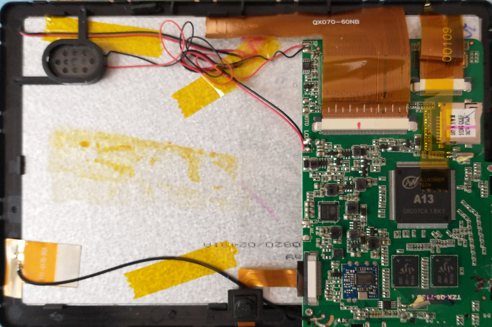
The battery looked like it was about to explode, so I removed it. Just imagine a battery being next to the board.
The process
To create a new linux OS for the tablet, I followed a checklist:
- Is there a crosstool-ng defconfig for the CPU/SoC? There seems to be, arm-cortex_a8-linux-gnueabi exists.
- Is there a mainline u-boot defconfig for it? Is it even supported by u-boot? It seems to be supported, q8_a13_tablet_defconfig exists.
- Is there a mainline linux defconfig for it? It is even supported by linux? It seems to be supported, sunxi_defconfig exists.
- If yes, does the linux source provide a
.dtbfile after I built the kernel?
- If yes, does the linux source provide a
- Is there a buildroot defconfig for it? No, buildroot doesn’t seem to support this anchient piece of technology.
- If yes, does it provide me with an
.imgfile after it’s done building? No.
- If yes, does it provide me with an
Creating a cross compiler toolchain
Just like in some of my previous posts, I will once again build a cross compiler toolchain.
Getting crosstool-NG
git clone https://github.com/crosstool-ng/crosstool-ng
./bootstrap # crosstool-NG is cloned from github
./configure --enable-local
make
Creating a toolchain for the Allwinner A13
The Allwinner A13 uses a Cortex A8, so the toolchain will have to support that processor type. Luckily, there is one.
To build the toolchain for the Allwinner A13 Soc:
./ct-ng arm-cortex_a8-linux-gnueabi
./ct-ng build
The folder /home/$USER/x-tools/arm-cortex_a8-linux-gnueabi/ should now exist. To verify this:
$ ls ~/x-tools/
arm-cortex_a8-linux-gnueabi
Building u-boot
In this post, the mainline u-boot will be used.
Getting u-boot
If it works, mainline u-boot will be used. It will be downloaded directly from github:
git clone https://github.com/u-boot/u-boot.git
Building u-boot for the q8 tablet:
cd u-boot
export ARCH=arm
export CROSS_COMPILE=/home/$USER/x-tools/arm-cortex_a8-linux-gnueabi/bin/arm-cortex_a8-linux-gnueabi-
make q8_a13_tablet_defconfig
make menuconfig # to change the boot timeout, if desired
make
The u-boot folder should now contain some more files. To verify:
$ ls u-boot | grep u-boot
u-boot
u-boot.bin
u-boot.cfg
u-boot.dtb
u-boot-dtb.bin
u-boot-dtb.img
u-boot.dtb.out
u-boot.img
u-boot.lds
u-boot.map
u-boot-nodtb.bin
u-boot.srec
u-boot-sunxi-with-spl.bin
u-boot-sunxi-with-spl.map
u-boot.sym
Building linux
Getting linux
To obtain linux, I download the latest available version from the releases page at github (v6.4 at time of writing):
wget https://github.com/torvalds/linux/archive/refs/tags/v6.4.tar.gz
tar -xvf v6.4.tar.gz
Building linux for the q8 tablet
Building linux for the tablet is very straightforward and doesn’t take very long:
cd linux-6.4
export ARCH=arm
export CROSS_COMPILE=/home/$USER/x-tools/arm-cortex_a8-linux-gnueabi/bin/arm-cortex_a8-linux-gnueabi-
make sunxi_defconfig
make menuconfig # for any desired changes
make -j`nproc`
The folder arch/arm/boot should now containe a file called zImage. To verify:
$ ls arch/arm/boot/ | grep Image
Image
zImage
Both Image and zImage… Nice!
Another file that needs to be present, is the .dtb file. This file contains a list of hardware inside the tablet.
To verify:
$ ls arch/arm/boot/dts | grep a13-q8
sun5i-a13-q8-tablet.dtb # The file I'm looking for, a .dtb file
sun5i-a13-q8-tablet.dts
Creating a minimal SD-card image
If I read this mailing list correctly, the Allwinner A13 can boot from an SD-card. For that to happen, u-boot needs to be flashed to an SD card in the correct way.
Instead of flashing directly to an SD card, an SD card image will be created. That image will then be flashed onto an SD card. To create an SD card image, I will use an existing genimage config from buildroot and edit it, so it works for the q8 tablet.
Genimage config
The genimage config file (genimage.cfg) looks as follows:
image boot.vfat {
vfat {
files = {
"zImage",
"sun5i-a13-q8-tablet.dtb",
}
}
size = 8M
}
image sdcard.img {
hdimage {
}
partition u-boot {
in-partition-table = "no"
image = "u-boot-sunxi-with-spl.bin"
offset = 8K
size = 530K # file is 525KB in size (measured in KB, not KiB)
}
partition boot {
partition-type = 0xC
bootable = "true"
image = "boot.vfat"
}
# The rootfs partition will be configured later
partition rootfs {
partition-type = 0x83
image = "rootfs.ext4"
size = 0
}
}
To build the image, I copy over all the required files and start genimage:
$ genimage --help
genimage: command not found
$ sudo apt install genimage
...
E: Unable to locate package genimage
# What? Debian unstable seems to have `genimage` in it's repo's,
# why not Ubuntu?
Getting genimage
Genimage is not in the package repositories of ubuntu yet? Building it is straightforward enough:
git clone https://github.com/pengutronix/genimage
cd genimage
./autogen.sh
./configure
make
# DO NOT EXECUTE `sudo make install`,
# IT WILL CURSE YOUR GNU/Linux INSTALLATION!
cd ..
# To use genimage, execute the local file.
./genimage/genimage --help
Building the image using genimage (attempt #2)
First, copy the required files into a separate folder:
mkdir genimage_input
cp u-boot/u-boot-sunxi-with-spl.bin genimage_input
cp linux-6.4/arch/arm/boot/zImage genimage_input
cp linux-6.4/arch/arm/boot/dts/sun5i-a13-q8-tablet.dtb genimage_input
touch genimage_input/rootfs.ext4 # create an empty rootfs file for now
Then, tell genimage where to find everything and where to export everything to (this builds the actual image):
mkdir genimage_output
./genimage/genimage --config genimage.cfg --rootpath genimage_output --inputpath genimage_input
Genimage should have created a folder called images. This folder will contain a file called sdcard.img. To verify:
$ ls images/
boot.vfat sdcard.img
Writing the image to an SD card
Writing this image to an SD card is no different from the way Raspberry Pi users would do this. Use your favourite tool for this. In another blog post I have already explained how this process works.
Booting the tablet
Because the tablet has an Allwinner SoC, it boots just like a PinePhone (non-pro edition): Just insert the SD card and turn it on!
After the tablet was powered on, u-boot immediately showed up on the screen:
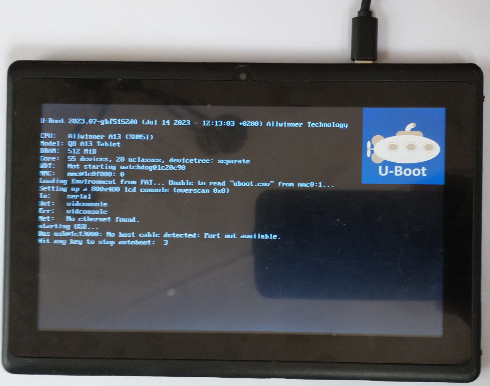
This tells me a few things:
- It has 512MiB RAM.
- It boots from an SD card, just like a Raspberry Pi/PinePhone does. If the card is removed, it boots android again (as if nothing happened).
- The screen works.
- U-boot knows where the boot partition is located: it seeks it’s environment config (
uboot.env) inmmc0:1. No changes needed there. - The power and volume keys don’t stop the u-boot autoboot.
Configuring u-boot
U-boot does not load linux yet, because it says it’s missing a file called uboot.env. U-boot will not do anything if it cannot find it’s configuration.
To fix uboot.env not being present, let’s create a file called boot.scr.
U-boot goes through a few stages when booting:
- It gives some hardware information.
- It looks for
uboot.env(which doesn’t exist in this case). - It looks for
boot.scr, a boot script (which doesn’t yet exist in this case). - It tries to boot from a network.
- It says it failed and hangs forever.
Because I have no idea where the UART-pins are yet, I cannot interact with u-boot. So, I cannot create uboot.env. So, boot.scr will be created instead.
Creating boot.scr
To create a boot script for U-boot, a text file with some script text needs to be converted.
For this project, a file called boot.txt is created, with the following contents:
setenv bootargs root=/dev/mmcblk0p2 rootwait panic=10 console=/dev/ttyS0,115200
console=tty0
load mmc 0:1 $kernel_addr_r zImage
load mmc 0:1 $fdt_addr_r sun5i-a13-q8-tablet.dtb
bootz $kernel_addr_r - $fdt_addr_r
It is then converted to boot.scr using the following command:
mkimage -C none -A arm -T script -d boot.txt boot.scr
After copying boot.scr to the SD card, u-boot knew what to do and stopped complaining about missing files. It then started booting linux:
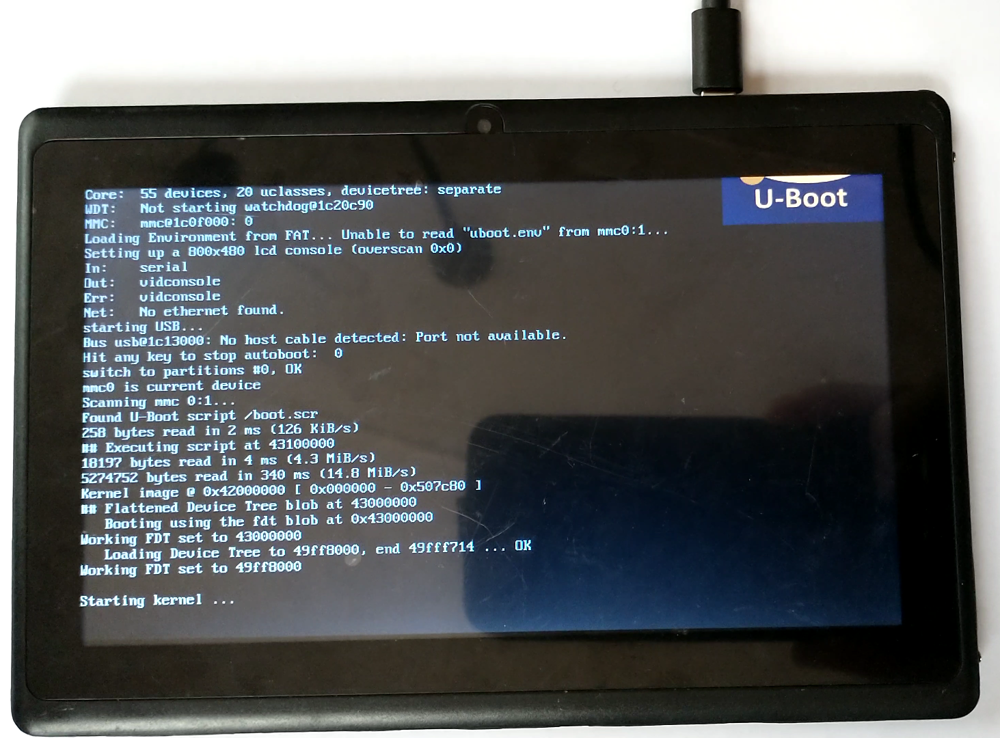
Linux! Or not.
But after that, nothing. No kernel output, no logs, nothing. Just an empty screen.
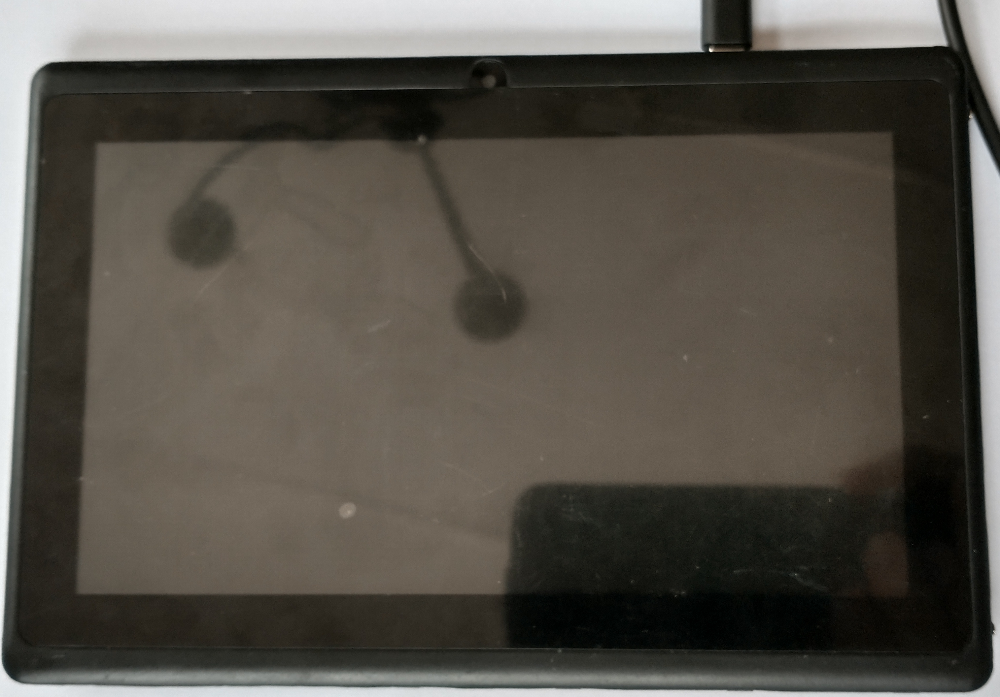
In fact, the whole tablet just turned off.
Even with external power applied (faking the presence of a battery), the device turns off. This happens after about 1 second after linux is loaded.
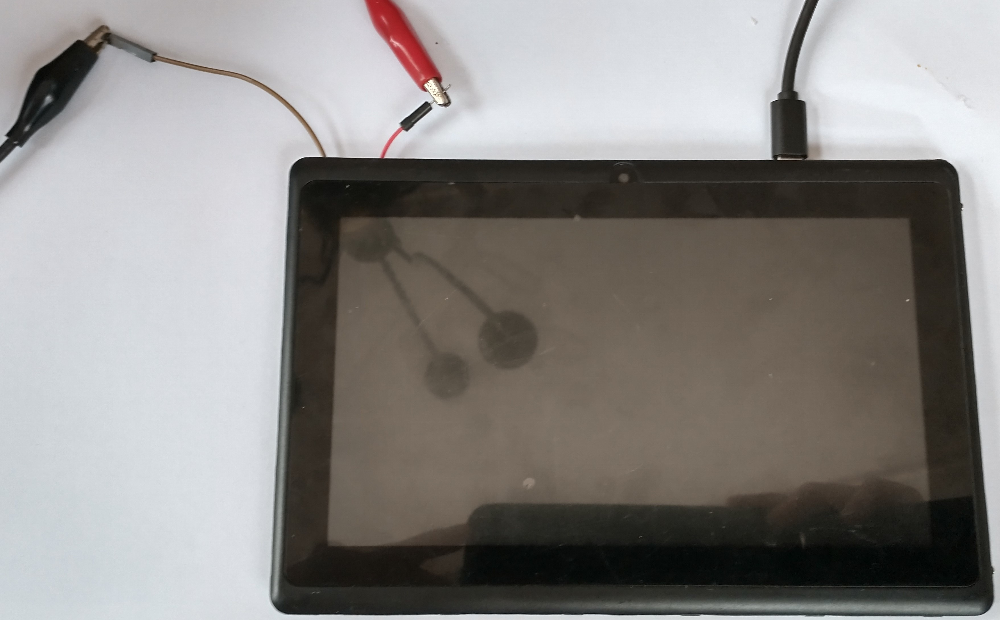
This variant of the q8 tablet has it’s wifi chip wired differently. So, as soon as the wifi chip gets powered, the tablet turns off.
Someone else figured out a solution to this problem. Maybe that will work? The post speaks of disabling LDO3 (and thus disabling wifi and usb). To test this, the LDO3 entries in u-boot/arch/arm/dts/sun5i-reference-design-tablet.dtsi were removed (make sure to make a backup!).
After that, a new .dtb file was created:
make dtbs # with u-boot source as $PWD
After booting, it turns out the user was onto something. The tablet doesn’t immediately turn off anymore. Instead, the screen only displays white lines, after which the tablet reboots.
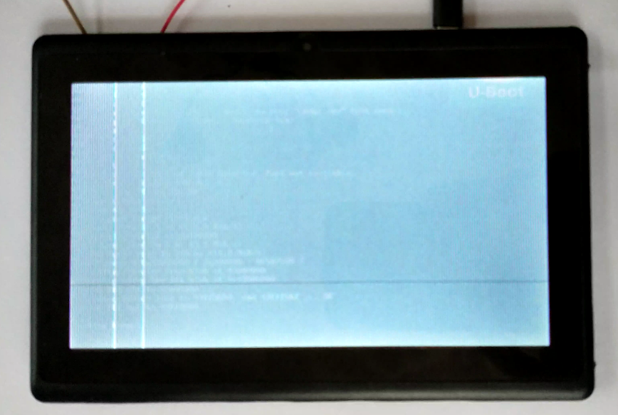
Switching to linux-sunxi
Many years ago, there was a linux-fork called linux-sunxi and a u-boot fork called u-boot-sunxi. These forks still exist and are widely used today. In recent years, most of the the linux-sunxi drivers have been merged into the mainline linux kernel.
As seen earlier, the mainline version of u-boot supports the Allwinner A13 SoC now. The mainline linux version however, still crashes (the screen?) when it boots.
So, there is a chance that linux-sunxi works. After downloading release version 5.8 (latest version at time of writing) and repeating exactly the same steps as before, it worked! The linux kernel logs were shown:
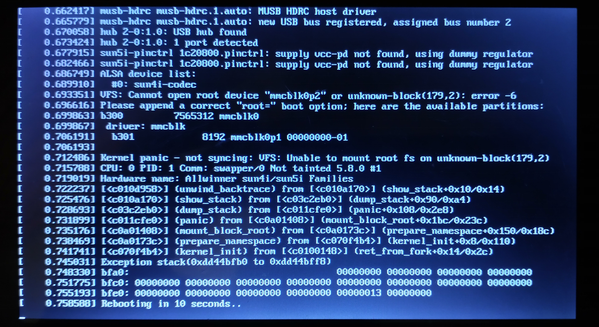
Can Linux mount a rootfs and start an init?
Linux now starts and prints logs to the tablet’s display, but it panics. This was expected, since the genimage.cfg does not yet contain a rootfs configuration.
To test if any rootfs can be mounted at all, a second partition was added to the SD card, containing a rootfs from the A13 OLinuXino board. Although the rootfs is not made for this tablet, it displayed the Debian CLI login:
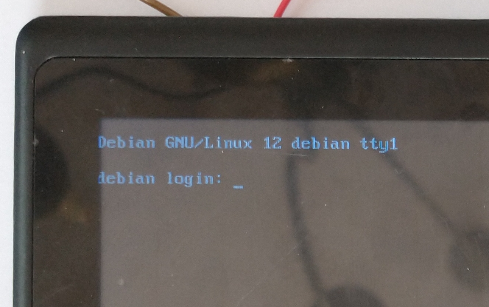
The same trick worked for Arch as well:
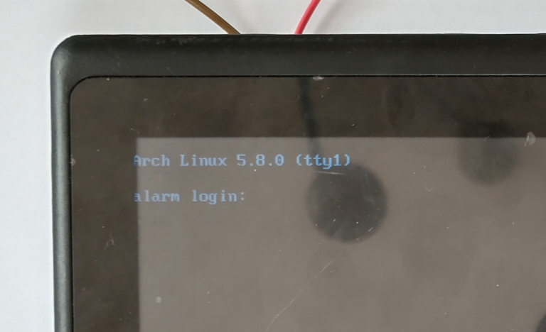
A rootfs with a GUI
All of these CLI logins are fun and all, but how about something with graphics?
Ubuntu MATE has a 32-bit armhf image, meant for Raspberry Pi’s. Merging Ubuntu MATE’s userland and linux-sunxi, reveals that the tablet can run a desktop.
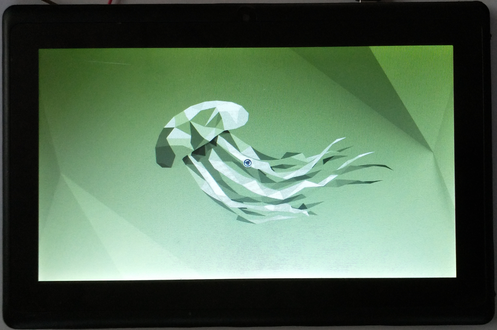
Although the tablet is slow, it eventually (after about 4 to 5 minutes) started the Ubuntu MATE setup:

Why does this work?
Why does an OS, created for the Raspberry Pi, work on this tablet? The tablet and the Raspberry Pi 2 share a similar architecture: ARMv7. So, both SoC’s are able to run 32 bit ARM code.
Also, the copypasta is correct:
What you’re referring to as Linux, is in fact, GNU/Linux. Many computer users run a modified version of the GNU system every day, without realizing it. Through a peculiar turn of events, the version of GNU which is widely used today is often called “Linux”, and many of its users are not aware that it is basically the GNU system, developed by the GNU Project.
Linux is just a kernel. When people talk about “linux”, they really mean the (GNU) userland binaries that they are interacting with.
You can get away with a lot of “ugly” solutions to create an OS (like the one described in this post), because “Linux” is not an entire OS. This project uses linux-sunxi instead of raspberrypi/linux, but the userland binaries remain the same. They will work with many versions of linux (the kernel!).
However, this method should not be used in production. In a production environment, just use yocto or buildroot to create a fully compatible image for the hardware.
The touchscreen doesn’t work
The tablet did not respond to the touch screen when clicked or dragged. Looking at u-boot/arch/arm/dts/sun5i-reference-design-tablet.dtsi, it quickly became clear why this is the case:
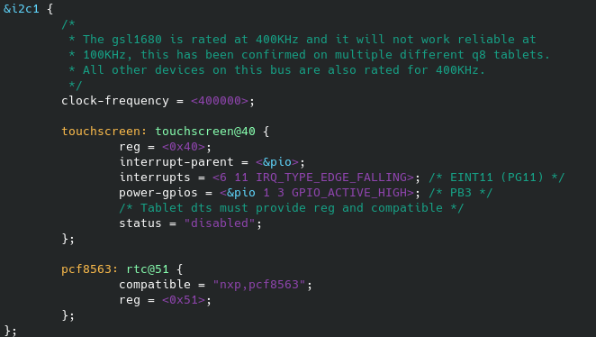
The touch screen is disabled, because these tablets often have different types of touch screens. The tablet I have says FYX00109 the cable.
Figuring out which touch screen the tablet has
To figure out which screen the tablet uses, Android 4.1 was started again.
Inside an adb shell, lsmod will give a list of active linux modules:
root@android:/ # lsmod
8188eu 784805 0 - Live 0xbf160000
sun4i_vibrator 2459 0 - Live 0xbf15c000
rtl8150 10305 0 - Live 0xbf155000
mcs7830 7581 0 - Live 0xbf14f000
qf9700 9152 0 - Live 0xbf148000
asix 24601 0 - Live 0xbf13c000
cedarx 9351 0 - Live 0xbf135000
mali 151260 4 - Live 0xbf103000
da311 29089 0 - Live 0xbf0f6000
ump 49518 9 mali, Live 0xbf0e2000
gslX680 94888 0 - Live 0xbf0c5000
sun5i_csi0 30454 0 - Live 0xbf0b8000
gc0329 18132 0 - Live 0xbf09e000
gc0309 17436 0 - Live 0xbf095000
siv121du 18993 0 - Live 0xbf08c000
siv121d 14194 0 - Live 0xbf084000
gc0308 18464 0 - Live 0xbf07b000
camera_auto_detect 14914 7 sun5i_csi0,gc0329,gc0309,siv121du,siv121d,gc0308, Live 0xbf04f000
videobuf_dma_contig 6251 1 sun5i_csi0, Live 0xbf04a000
videobuf_core 20242 2 sun5i_csi0,videobuf_dma_contig, Live 0xbf040000
nand 225024 10 - Live 0xbf000000
To figure out which driver is responsible for the touch screen, I started to unload modules (using rmmod) until the touch screen didn’t respond anymore. In this tablet, it was the gslX680 module. This means, according to the linux-sunxi.org website, that this tablet has a Silead gsl1680 touch screen.
According to the datasheet for the touch screen, the reg entry in de .dts files has to be set to 0x40. Let’s edit u-boot/arch/arm/dts/sun5i-reference-design-tablet.dtsi again, to enable the gsl1680 driver:
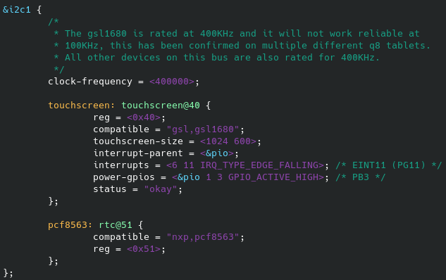
A compatible entry was added to tell linux that the gsl1680 driver will work with the touch screen in the tablet. Also, the status was changed from disabled to okay. The rest of the .dts file was left as-is.
Also, a kernel module was enabled (as a module, not built into the kernel!):
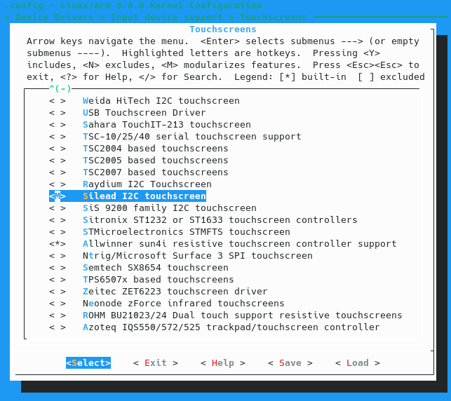
And sure enough, in the linux logs, the driver can find the touch screen (please excuse the poor camera image, I still haven’t taken the time to find the UART pins on this thing):
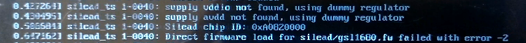
However, as seen in the logs, it requires a file called silead/gsl1680.fw. The original android OS uses a similar firmware file. Luckily, the firmware for this touch screen can be found on github. Renaming this firmware file to gsl1680.fw and placing it in <sdcard>/lib/firmware/silead/ resulted in the driver being loaded correctly. After that, the cursor moved!

The cursor only seems to stay in the upper left corner though, so some sort of calibration must be applied before it’s usable.
Calibrating the screen
To manually calibrate the touch screen, a transformation matrix can be applied to the touch screen input. This is usually done by creating an X.org configuration file. On the internet, people specify names of their input devices. But, I have no idea what this touch screen is called. So, this config file just calibrates all touch screens.
The <SD card rootfs>/etc/X11/xorg.conf.d/99-touchscreen.conf file contains the following configuration:
Section "InputClass"
Identifier "evdev touchscreen catchall"
MatchIsTouchscreen "on"
MatchDevicePath "/dev/input/event*"
Driver "evdev"
Option "TransformationMatrix" "4 0 0 0 7 0 0 0 1"
EndSection
Distro-hopping
Ubuntu MATE
After the touch screen was calibrated, the Ubuntu MATE installer would go to the next page. The setup process went fine, until a username had to be entered. Ubuntu MATE doesn’t have a pop-up keyboard, like android does. So, this became an impossible task:

It seems that in this version of Ubuntu MATE, it is impossible to enable the on screen keyboard during setup.
Raspberry Pi OS
As much as I would have liked to run Ubuntu MATE on the tablet, the OS would not let itself be configured, not even when booted from a Raspberry Pi 3 (X.org did not start for whatever reason). Raspberry Pi OS might work better, since it’s pre-configured. This way, the OS is already configured by rpi-imager. It should boot straight to the desktop.
And so it does, but something is off:
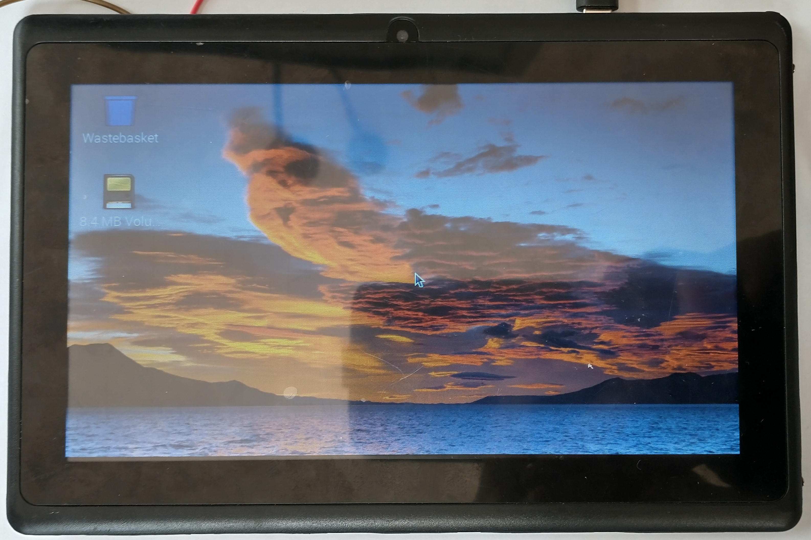
The top bar, along with the application menu is missing. It appeared, then crashed and disappeared forever.
The only application can be started is the file manager:
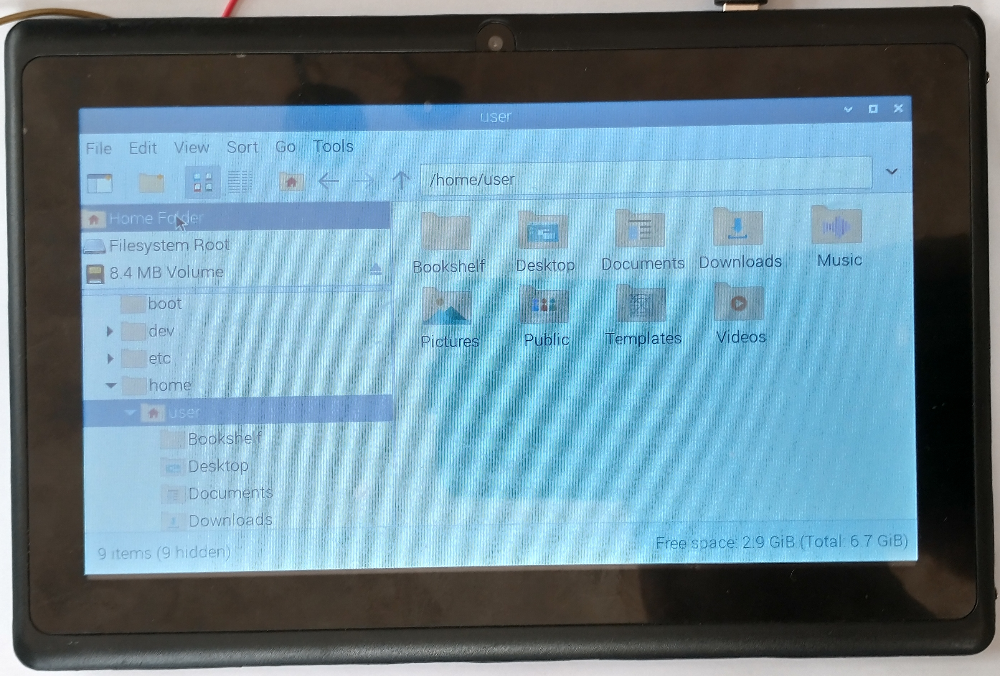
Maybe another userland works better…
Kali linux
As much as I would have liked to run Ubuntu MATE or Raspberry Pi OS on the tablet, both desktops are not usable. So, the next userland is kali linux. Maybe this GUI is usable.
And so it is! Finally, an OS that understands my needs! It has an option for an on screen keyboard everywhere!
Login screen

Desktop

Screenshots from the device itself
Notepad and keyboard
With the convinience of an on screen keyboard, screenshots can be made on the device!
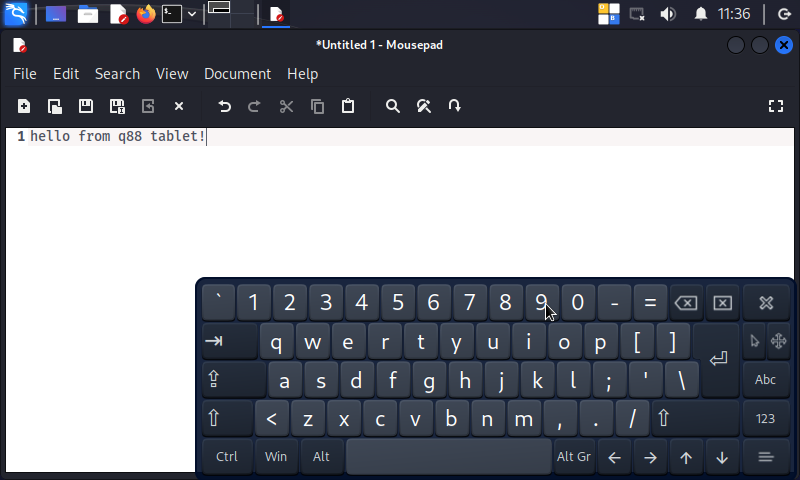
Firefox
Starting firefox slows the tablet down very much, to the point where it’s almost unusable.
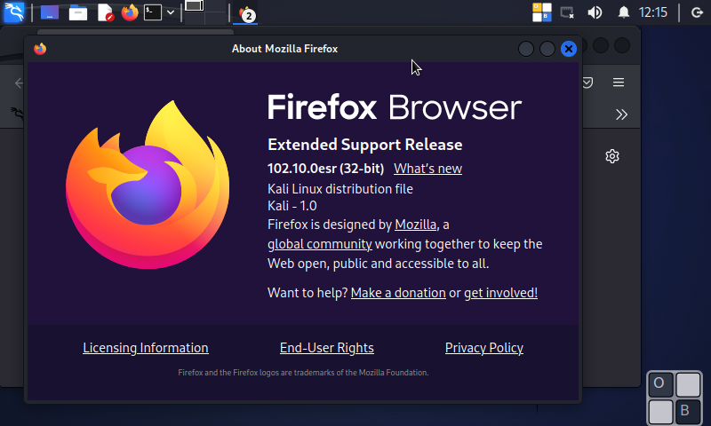
Task manager
As seen in task manager, the SoC has some troubles with a “modern” OS. The task manager program used around 30% of the CPU. Another 20% of the CPU was used by the screenshot program.
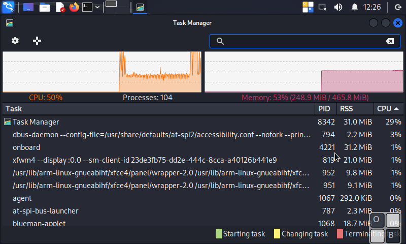
I did not expect it to use so little memory. Nowadays, RAM quickly goes up to 1GiB or more.
Video playback
To see how well the tablet can play a video file, I downloaded a 360p version of the famous music video. Below is a gif of how that went (the tablet did it’s best):

Conclusion
It is possible to run linux(-sunxi) and a graphical desktop on an old Allwinner A13 tablet, but it’s very slow.
Also, this tablet variant has a problem where it shuts down as soon as the wifi card is enabled. In the future I might try to fix this issue. But, seeing how slow the tablet is, I think it’s not really worth the effort.
Attachments
I will not share any SD card images, but I will leave the genimage.cfg config file and the create_image.sh script here. Richt clicking the links and choosing save as will probably work. All the (other) required input files will not be shared.